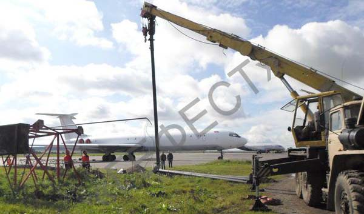

Полноприводные автоямобуры на базе Урал 5557 и КАМАЗ доедут до участка даже по бездорожью. Бурение грунтов 100–800 мм, лидерное бурение, монтаж винтовых свай 60–325 мм. Работаем круглый год, в том числе на промороженном грунте.
+7 (342) 277-65-76 Цены на арендуБурильно-крановые машины (автоямобуры) «Гефест» выполняют работы в любое время года, даже на промороженной земле, с минимальными затратами времени и физической силы.
Бурение грунтов диаметром 100, 150, 200, 250, 300, 350, 400, 450, 500, 800 мм в грунтах до 3-й категории.
Завинчивание свай с диаметром ствола 60, 73, 89, 114, 133, 159, 168, 219, 325 мм. Сваи производства «Гефест» и других заводов.
Подробнее →Предварительное бурение скважин под забивные и винтовые сваи: мёрзлые грунты, плотные пески, стеснённая застройка.
Подробнее →Бурение отверстий в грунте до 1200 мм, в том числе на глубину до 30 метров.
Монтаж опор линий электропередачи с люльки, бурение под опоры в любых грунтах.
Устройство свай методом раскатки скважин без выноса грунта на поверхность.
Подробнее →Собственный парк бурильно-крановых машин на полноприводных шасси. Полные характеристики — здесь.

Аналог УБМ-85. Крановое шасси 6×6, стрела 14 м, крутящий момент 5 т·м, бурение до 30 м.

Шасси 4×4, стрела 10 м, крутящий момент 1 т·м, гидрокабестан на втором вылете (7 м).

Установка AICHI D-705, шасси 6×6, стрела 12 м, монтажная люлька. Бурение до 10 м.
Минимальное время заказа — 4 часа. Перегон техники до объекта оплачивается отдельно. Доставка — 90 ₽/км, обратная дорога бесплатно.
Объекты монтажа винтовых свай и бурения по Пермскому краю. Все работы с фотографиями →
Монтаж винтовых свай СВС 219/500-11000 и СВС 159/450-11000
Монтаж винтовых свай СВС-219/550-8000
Монтаж винтовых свай ВСГ-3 159/450-7000
Монтаж винтовых свай ВСГ-1 89/300-2500
Монтаж винтовых свай ВСГУ-1 89/300-5000
Монтаж винтовых свай СВЛ-219/500-6000
Позвоните — подскажем, какая машина подойдёт под ваш грунт и объём работ.
stas@zavodsvay.ruПриём заказов, оплата и оформление документов.
614000, г. Пермь, ул. Промышленная, 115